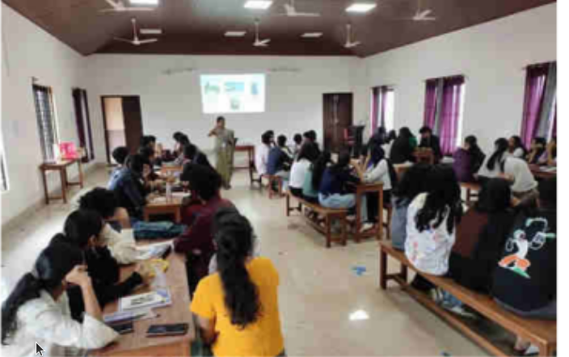
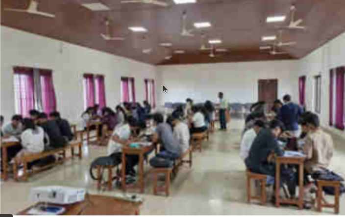
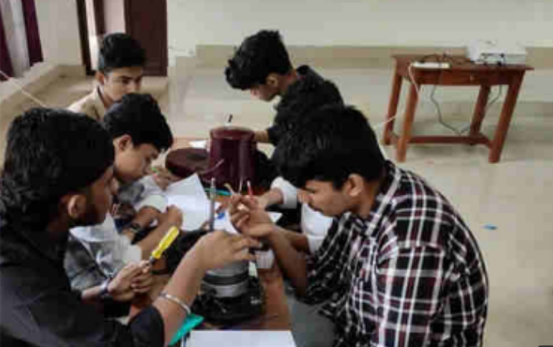
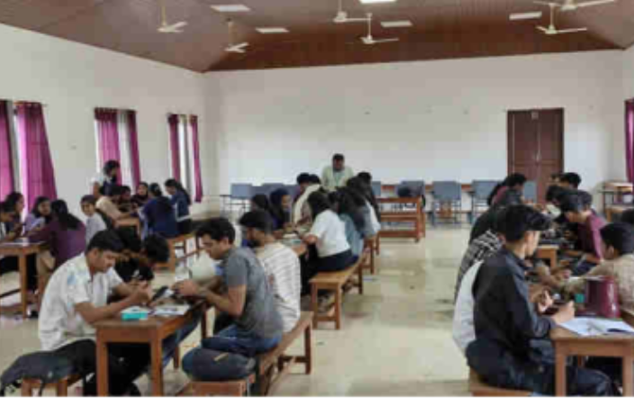

B.TECH: The four year degree program has an intake of 69 including 6 lateral entry seats.
M.TECH: The department runs an M.Tech program with specialization in Network Engineering. The annual intake is 18.